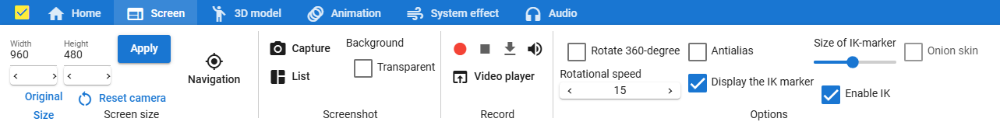

6.13.1.2. Screen tab
There are buttons for screen-related functions.
In the screen size
- Screen size:
Specify the width and height of the WebGL screen freely.
- Apply:
Reflects the size you entered.
- original size:
Resize the WebGL screen back to match the current app size.
- reset camera:
Restore the default position of the main camera. (Shortcut: R key)
- Navigation:
Displays a small navigation window.
In Screenshot
- capture:
Take a screenshot of the current WebGL screen and save it.
- List:
Displays a window for displaying and managing screenshots taken.
- transparent background:
Makes the background part of the WebGL screen transparent when taking screenshots.
In Record movie
- recording:
Start recording the WebGL screen. All operations and animations are recorded until you stop.
- Stop:
Stop recording.
- download video:
Download the recorded content. The format is webm format.
- Enable/mute audio:
Mute or re-enable audio for recorded video.
- Video player:
Opens the built-in video player in a separate window.
In Options
- 360 degree rotation:
Rotate the camera 360 degrees around the currently selected object.
- Rotational speed:
Adjust the speed of rotation.
- antialiasing:
Applies anti-aliasing to WebGL screens.
- Show IK MarkersShow IK Markers:
Switch the display of IK markers when operating each object. It is not linked to the display of IK markers in VR/AR space.
- IK marker size:
Change the size of the IK marker. (0.01 to 0.2)